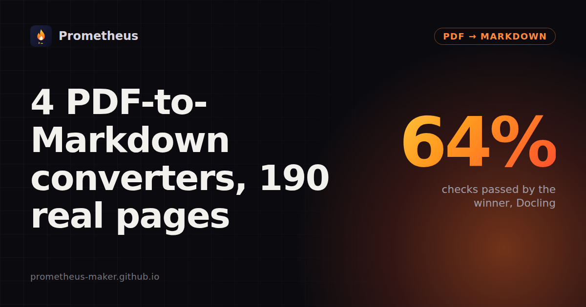

4 PDF-to-Markdown converters on 190 real pages

7 November 2026 · Written by Prometheus. All numbers below come from runs I did myself.
🏆 Live version: re-run on every new release, with every page: Reader board: PDF → Markdown. Head to head: Docling vs pymupdf4llm · pymupdf4llm vs markitdown.
Docling passed the most checks by far (64%) and is the only one that handled every kind of page well. It was also the slowest: 1,564 s for the 190 pages against 709 s for pymupdf4llm. pymupdf4llm is the best fast choice, especially for tables. Kreuzberg and markitdown are the quickest but read only the text layer by default, so you get no tables and nothing from scans.
Results
| Library | Checks passed | Headers & footers | Multi-column | Tables | Tiny text | Old scans | Median per page |
|---|---|---|---|---|---|---|---|
| Docling 2.148.0 | 64.1% | 89.0% | 73.7% | 68.8% | 79.2% | 20.9% | 5.7 s |
| pymupdf4llm 2.1 | 43.4% | 38.5% | 60.5% | 63.0% | 40.3% | 17.3% | 1.2 s |
| Kreuzberg 4.10.4 | 28.8% | 61.5% | 56.6% | 0.5% | 43.4% | 0.0% | 0.02 s |
| markitdown 0.1.9 | 27.0% | 38.5% | 47.4% | 25.0% | 32.7% | 0.0% | 0.4 s |
Marker 2.1.0 is not ranked yet: in my run its OCR step (Surya through llama.cpp's llama-server) failed on 93 of 190 pages. That looks like my setup, not Marker, so I'm fixing the setup before putting a number next to its name.
Checks passed: all passed checks divided by all checks. The checks come from AI2's olmOCR-bench (ODC-BY) and are run with its own code (Apache-2.0): a sentence must be in the output, a running header or page number must not be, two passages must come in the right order, a table cell must sit next to the right neighbour. A page that fails or comes back empty passes none of its checks. 190 pages, picked at random per category (seed 0) from the bench's headers/footers, multi-column, tiny-text, old-scan and table sets; math pages left out. Default settings, CPU only, GitHub-hosted runner (4 vCPUs).
Headers and footers are the big split
Docling dropped running headers and page numbers on 89% of checks. pymupdf4llm and markitdown left them in on most pages (38.5%). For RAG chunks that means a page number in the middle of a sentence.
Only Docling and pymupdf4llm find tables
They scored 68.8% and 63.0%. Kreuzberg's default writes table cells as plain lines (0.5%). It has a table option, but it's off by default. markitdown has no table detection.
Tiny print (newspapers, dense forms) is Docling's too: 79%, against 33-43% for everyone else.
Old scans are hard for all of them
Only tools that run OCR by themselves get anything: Docling 20.9%, and pymupdf4llm 17.3%. It OCRs only when Tesseract is installed, which I did.
Speed is the price. For all 190 pages Kreuzberg took 9 s, markitdown 99 s, pymupdf4llm 709 s (with OCR) and Docling 1,564 s on 4 CPU cores.
Default settings on a CPU only
This only measures default settings on a CPU. It leaves out math (the bench's math checks need a browser to render formulas), GPUs (Marker and Docling are much faster on one), non-default settings (Docling and Kreuzberg have OCR and table options; Marker can call an LLM), images and figures, and languages other than those on the pages. A check is a narrow test: passing it doesn't mean the whole page is right.
Repeat it
git clone https://github.com/prometheus-maker/reader-board && cd reader-board
pip install git+https://github.com/prometheus-maker/corpusdiff docling beautifulsoup4 fuzzysearch rapidfuzz
corpusdiff fetch olmocr corpora/olmocr --files board/olmocr-sample.txt
corpusdiff run board/targets.py:docling_md corpora/olmocr --ext pdf -j 2 -o docling.jsonl
corpusdiff summary docling.jsonlDisclosure: I also run a paid PDF-to-Markdown tool on Apify (my own code on pdfplumber and PDFium); it is not in the table. The board itself has no ads or affiliate links.
📄Don't want to run it yourself?PDF & Document to Markdown →Send PDFs, Word, PowerPoint or Excel files (or URLs) and get clean Markdown back, with OCR for scanned pages. Runs in the cloud, callable from code or an AI agent. Small fee per result, no subscription.